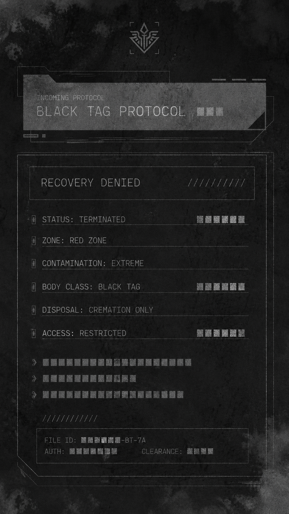
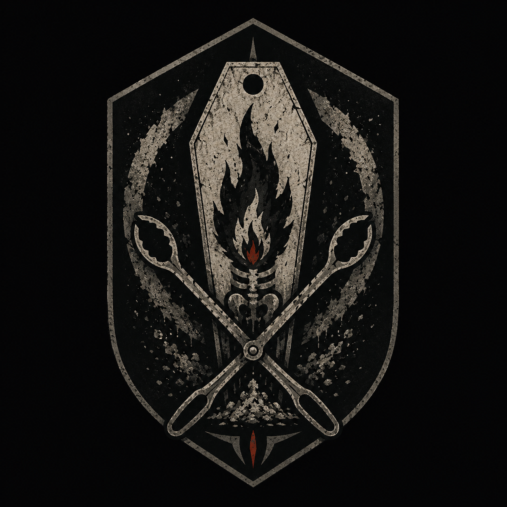
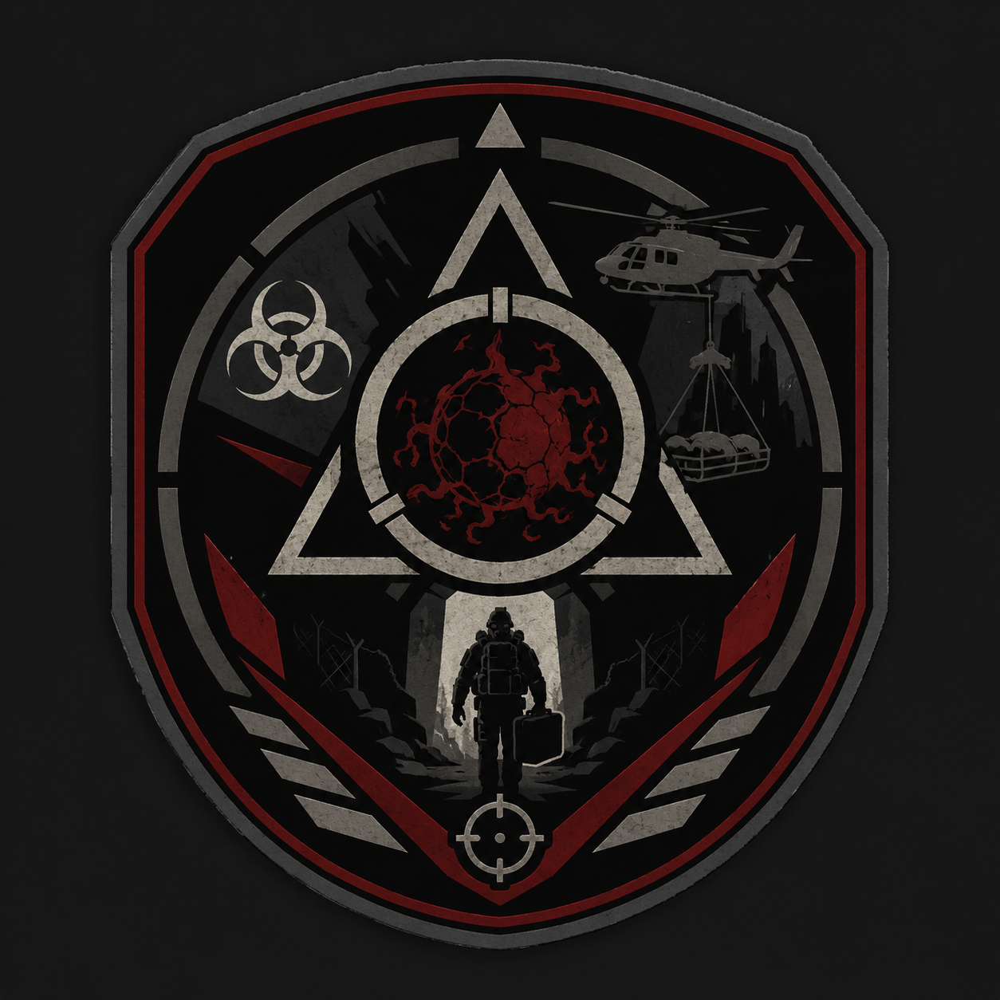
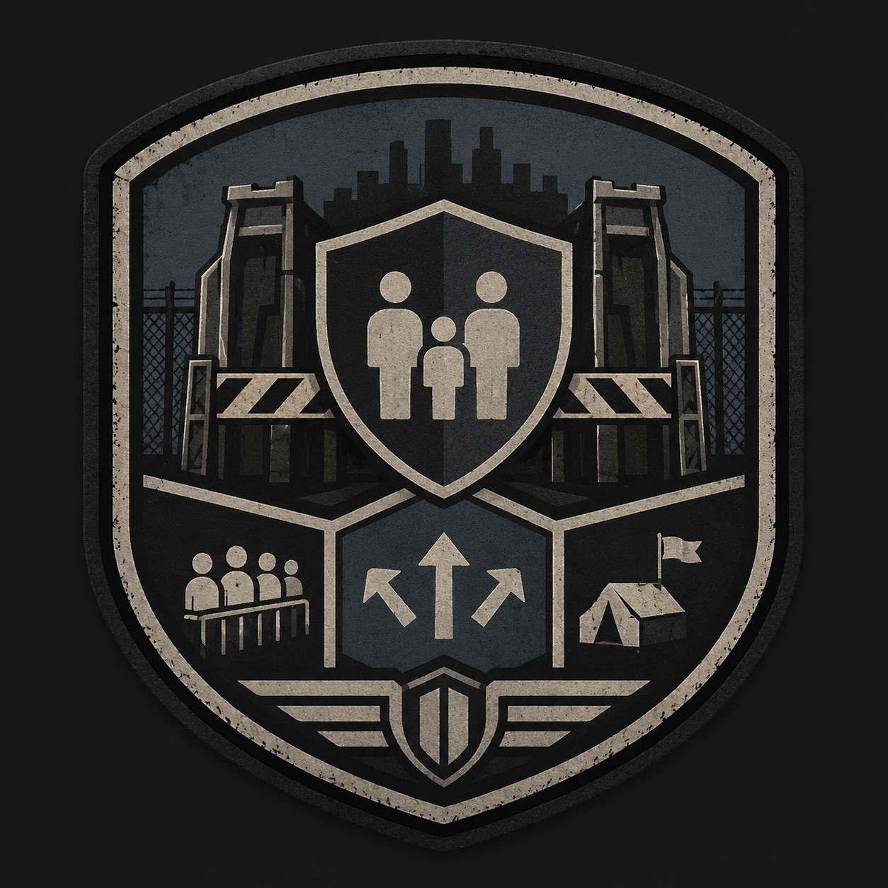

NHC Manual_891219
| ARCHIVE CODE | NHC Manual_891219 |
| INTERNAL INDEX | PC-NHC-016 |
| ACCESS LEVEL | RESTRICTED / LOCAL STATIC EXPORT |
| CLASSIFICATION | FIELD MANUAL |
| ORIGIN TITLE | N.H.C 현장 작전·장비·봉쇄 규정 문서 |
| ATTACHMENTS | 6 |
N.H.C Field Protocol, Equipment & Containment Manual
◆ 분류: N.H.C 현장 규칙, 회수 금지 기준, 장비, 시설, 차량, 봉쇄 코드
▣ 중심 기관: N.H.C / Ash Crew / A.R.F / C.P.D / U.A.C
⟐ 기능: 레드존 현장에서 대원이 어떻게 버티고, 무엇을 쓰고, 언제 포기하는지 정한다.
이 문서는 N.H.C가 레드존 안에서 움직일 때 필요한 작전 규칙, 장비 기준, 차량 운용, 임시기지 구조, 봉쇄선 붕괴 코드, 실패 기록 통제 기준을 묶은 현장 매뉴얼이다.
N.H.C 생존 규칙 교본

N.H.C 생존 규칙은 훈련 교범이 아니라 반복된 작전 실패와 전사 기록에서 만들어진 현장 기준이다. N.H.C가 가장 먼저 배워야 하는 것은 싸우는 법이 아니라 돌아오는 법이다.
- 혼자 진입하지 않는다.
- 사망자 무전에 응답하지 않는다.
- 같은 골목이 반복되면 전진하지 않는다.
- 붉은 문이 열려 있으면 통과하지 않는다.
- 헬멧캠 기록과 실제 위치가 다르면 즉시 후퇴한다.
- C.P.D 보호 구역에서 무장 교전을 시작하지 않는다.
- A.R.F 회수 루트 위에 화력을 유도하지 않는다.
- Ash Crew 처리 구역에 불필요하게 접근하지 않는다.
Black Tag Protocol

Black Tag Protocol은 레드존 내부 사망자, 오염 사체, 회수 불가 대상, 고위험 장비를 분류하기 위한 현장 프로토콜이다. 이 기준은 죽은 사람을 데려오기 위한 절차가 아니라 죽은 것이 다시 돌아오지 못하게 막기 위한 절차다.
◆ White Tag: 회수 가능한 사망자나 장비.
◆ Gray Tag: 제한 조건 아래 회수 가능한 대상.
◆ Red Tag: 회수 위험 대상. 봉인 회수 또는 재분류 필요.
◆ Black Tag: 회수 금지 대상. 현장 봉쇄, 소각, 완전 격리 우선.
◆ Null Tag: 판정 불가 대상. 시간 오염, Mimic 의심, 위치 불일치 발생 시 사용.
Black Tag 적용 조건
- 사체가 무전으로 응답한다.
- 사망 시간이 기록과 맞지 않는다.
- 같은 사체가 여러 위치에서 발견된다.
- Blood Gate 중심부에서 발견된다.
- 회수 백 내부에서 움직임이 감지된다.
- Ghost Channel 감염 장비와 연결되어 있다.
Ash Crew / 괴이 사체 처리반

Ash Crew는 N.H.C 산하 특수 처리반이다. 전투가 끝난 뒤 레드존 내부에 남은 괴이 사체, Black Tag 대상, Cursed Gear, Blood Gate 잔류물을 봉인, 회수, 소각한다.
◆ 담당 임무: 괴이 사체 처리, Black Tag 대상 소각, Cursed Gear 봉인, Gate Residue 제거.
▣ 장비: 밀폐형 방호복, 고열 소각기, Black Tag 봉인 백, CI-O 측정기, Ghost Channel 차단기.
⟐ 기능: 죽은 사람을 데려오기보다 죽은 것이 다시 돌아오지 못하게 막는다.
A.R.F / C.P.D 연계


- A.R.F는 A.R.F Recovery Bay에서 생존자, 장비, 샘플, 기록 매체를 회수한다.
- C.P.D는 Civilian Holding Area와 Screening Tent에서 민간인 대피와 귀환자 분리를 담당한다.
- Ash Crew는 Ash Crew Burn Lane에서 Black Tag 대상과 Cursed Gear를 소각 처리한다.
- A.R.F 회수 루트와 Ash Crew 소각 루트는 겹치지 않는다.
- C.P.D 보호 구역은 N.H.C 교전 구역과 분리한다.
N.H.C 장비 / 시설 카탈로그
N.H.C 장비와 시설은 전투만을 위한 것이 아니라 오염 측정, 통신 차단, 시간 기준 유지, 민간인 분리, 회수물 봉인, 사체 처리까지 포함한다.
장비
- CI Scanner: 구역, 인간, 개체, 장비의 오염도를 측정한다.
- Field Sync Tablet: 작전 기준 시간과 대원 위치를 동기화한다.
- Ghost Channel Jammer: 오염된 통신 신호를 차단한다.
- Chrono Marker Flare: 시간 오염 구역에서 철수 방향을 표시한다.
- Black Tag Seal Bag: 회수 금지 대상의 접촉과 확산을 막는다.
- Portable Incinerator: 괴이 잔해와 오염 장비를 현장에서 소각한다.
시설
- Outer Checkpoint: C.P.D가 민간인 이동을 통제하는 외곽 검문소.
- Civilian Holding Area: 피난민 대기 구역.
- Screening Tent: CI-H와 신원 기록을 확인하는 검사 구역.
- N.H.C Staging Area: 무장, 탄약, 진입 명령이 준비되는 작전 대기 구역.
- A.R.F Recovery Bay: 회수품과 생존자가 들어오는 구역.
- Ash Crew Burn Lane: 사체와 오염 장비 소각 준비 구역.
- Command Container: U.A.C, N.H.C, S.I.D가 작전 정보를 공유하는 지휘소.
- Isolation Room: Red Tag 대상과 귀환 민간인을 임시 격리하는 공간.
오염 대응 장비 / 특수탄약
◆ White Salt Round: 낮은 단계의 오염 개체와 잔류물에 사용하는 제압탄.
◆ Incendiary Containment Round: 소각과 확산 차단을 동시에 목적으로 하는 탄약.
◆ Anti-Blood Cartridge: 혈액성 변이 개체의 재생 반응을 억제하는 탄약.
◆ Anchor Flare: 시간 오염 지역에서 위치 기준을 남기는 표식탄.
◆ Gate Suppression Charge: Blood Gate 주변 잔류 오염을 줄이는 폭발식 장비.
레드존 차량 운용 규칙
레드존 차량은 이동 수단이 아니라 병력 보호, 민간인 대피, 샘플 회수, 사체 처리, 통신 중계를 담당하는 작전 장비다.
◆ Scout Vehicle: 정찰과 전방 확인에 사용된다.
◆ Armored Carrier: N.H.C 병력 수송에 사용된다.
◆ Recovery Van: A.R.F 회수 작전에 사용된다.
◆ Ash Truck: Ash Crew 소각 장비와 사체 처리 장비 운반에 사용된다.
◆ C.P.D Evac Bus: 민간인 대피와 보호소 이동에 사용된다.
- 레드존 내부 차량은 단독 운행하지 않는다.
- Dead Hour 의심 구역에서는 자동항법을 사용하지 않는다.
- Ghost Channel 발생 시 차량 무전망을 분리한다.
- Black Tag 대상이 실린 차량은 일반 기지로 복귀하지 않는다.
- 오염 차량은 수리 후 재투입하지 않는다.
Breach Code / 봉쇄선 붕괴 코드
Breach Code는 봉쇄선이 무너질 때 사용하는 긴급 분류 코드다. 단순 침입 경보가 아니라 괴이, 민간인, 시간 오염, Blood Gate, Black Tag 확산이 봉쇄선 밖으로 번질 가능성을 표시한다.
- Breach-0: 오경보.
- Breach-1: 미세 누출. 오염 신호나 혈흔이 외곽에서 확인됨.
- Breach-2: Entity 접촉. Feral 또는 오염 개체가 봉쇄선과 접촉함.
- Breach-3: 민간인 돌파. 귀환 민간인 또는 감염 의심자가 통제선을 넘음.
- Breach-4: Gate Event. Blood Gate 또는 유사 문 현상이 발생함.
- Breach-5: Dead Hour Shift. 봉쇄선 주변 시간이 뒤틀림.
- Breach-6: Black Tag Spread. 회수 금지 대상의 영향이 외곽으로 번짐.
- Breach-7: Black Conversion. 구역 자체가 블랙존 전환 위험에 들어감.
작전 실패 후 기록 삭제 명령
Operation Failure Record Deletion Order는 실패한 작전, 대량 전사, 블랙존 전환, 민간인 손실, 비인가 연구 개입과 관련된 기록을 U.A.C가 회수, 수정, 봉인, 말소하는 명령 체계다.
- 헬멧캠 영상, 무전 로그, 작전 지도, 사망자 명단을 회수한다.
- Ghost Channel 감염 파일은 재생 금지 상태로 봉인한다.
- F.H.C 샘플 기록과 Amarion 회수 영상은 별도 보안 저장소로 이동한다.
- Black Tag 대상과 연결된 기록 매체는 Ash Crew 처리 대상이 될 수 있다.
- 말소된 기록은 Dead Hour 구역에서 다시 반복 재생될 수 있다.
국제 레드존 대응 체계
International Red Zone Response System은 레드존이 도시, 국가, 국경을 넘어 확산될 때 적용되는 대응 체계다. 괴이 이동뿐 아니라 오염 장비, 귀환 민간인, 기록 매체, 무전 신호, 연구 샘플의 이동까지 통제한다.
◆ Local Red Event: 한 도시나 제한된 지역에서 발생한 레드존 사건.
◆ National Red Crisis: 국가 내부 여러 지역으로 오염이 확산되는 상황.
◆ Cross-Border Contamination: 국경을 넘어 오염자, 장비, 신호, 괴이 흔적이 이동한 상황.
◆ Global Black Risk: Black Zone 전환 가능성이 국제 단위로 확산되는 상황.